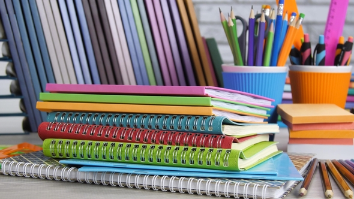
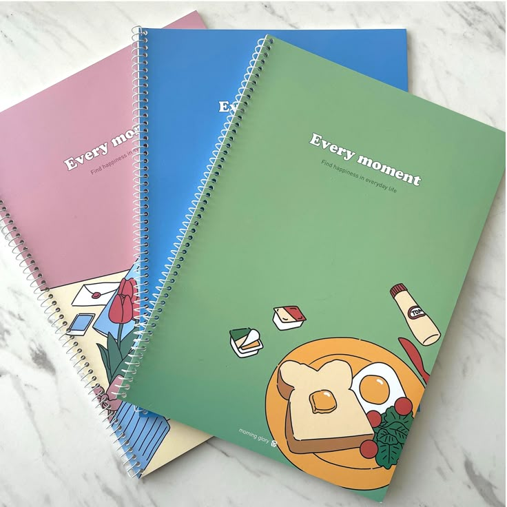
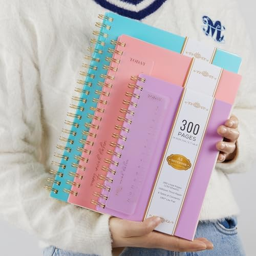

"BOOKS ARE MIRRORS:YOU ONLY SEE IN THEM WHAT YOU ALREADY HAVE INSIDE YOU"
Books are important for the mind, heart, and soul. But don’t take it from us: These quotes about reading speak for themselves. Books are used for gaining knowledge, enhancing skills (vocabulary, comprehension, communication), reducing stress, building empathy, Improving memory, providing entertainment, Fostering imagination, and offering lifelong learning, insight into cultures, Way to process emotions, serving as essential tools for personal growth, mental well-being, and understanding the world



